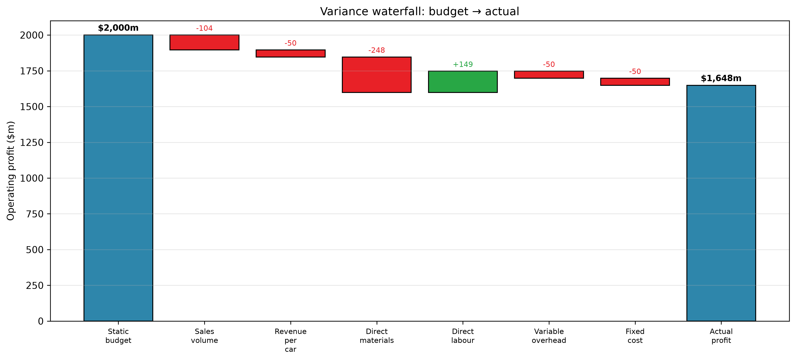
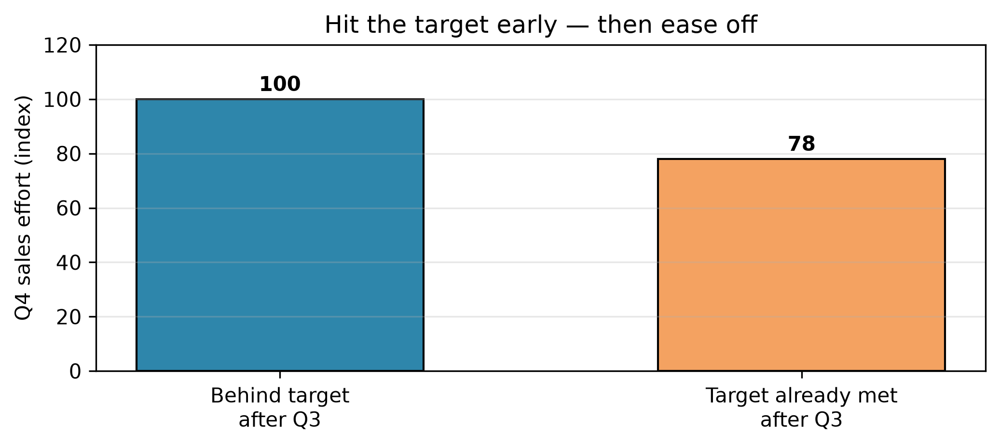

Tesla missed its Q4 targets. Was it the market, or the factory?
Author
Dr Furkan Çetin
Published
July 17, 2026
— open today’s notebook in your browser and run along (no install needed)
NoteFirst, yesterday settled
The lecture opens by closing Session 4. The Part D questions whose ground already ran live in yesterday’s lecture (D1 · D2 · D3 · D5) get quick confirms — hands and a number; the ones the case pushed beyond the lecture (D4, D6, D7 ▸) are worked in full. Every answer is printed in today’s handout. Then the promised optimiser demo — two constraints at once, with Excel Solver (tab “Product mix — Solver”, walkthrough included) and one line of Python on the Session 4 page. The quiz follows.
TipOpening quiz — Session 4 + Class 4
Four questions on yesterday — the lecture and the class. One best answer each; write your letters (or vote on Menti in the room), then check the reveal.
Bramley Joinery has a spare workshop and is deciding whether to launch a new garden-bench line in it. Which ONE of the following is a relevant cost of this decision?
A. The £9,000 feasibility study on the bench line, commissioned and paid for last month
B. The £5,000 annual depreciation on woodworking machines bought four years ago
C. The £4,000 of head-office overhead that would be allocated to the new line but is unchanged in total either way
D. The £6,000 a year a neighbouring firm would pay to rent the workshop if the bench line does not go ahead
The Harbourview Hotel has substantial spare capacity in the off-season. A tour operator offers a block booking at a price below the hotel’s full cost per room-night but above the variable cost per occupied room-night. No extra fixed costs would be needed, and regular bookings would be unaffected. On purely financial grounds, which statement is correct?
A. Reject the offer — a price below full cost means every room-night in the block is sold at a loss
B. Accept the offer — with spare capacity and no extra fixed costs, any price above variable cost adds contribution and raises profit
C. Accept the offer — fixed costs are irrelevant to short-term pricing decisions, so the capacity position does not matter
D. Reject the offer — the historical cost of building the hotel must be recovered on every booking taken
Thornbury Leather Goods sells 2,000 belts a year at £25 each; variable cost is £15 per belt. The belt line is also charged £26,000 a year of factory-wide overhead (rent and machinery), so it reports a £6,000 annual loss. That overhead is committed capacity and would continue unchanged if the line were dropped. If Thornbury drops the belt line, its annual profit will: A. Rise by £26,000 B. Rise by £6,000 C. Fall by £20,000 D. Fall by £50,000
Ravenscroft Toys makes the 5,000 wooden wheel sets its toy range needs each year. The cost report shows a full cost of £12 per set: direct materials £4, direct labour £2, variable overhead £1, the £5,000 annual maintenance contract on the wheel lathe (£1 per set), which would be cancelled if production stops, and £4 of allocated factory-wide overhead that would continue unchanged in total. An outside supplier offers identical wheel sets at £9 each, and the freed space would stand idle. If Ravenscroft switches to buying, its annual profit will: A. Fall by £5,000 B. Fall by £10,000 C. Rise by £10,000 D. Rise by £15,000
NoteReveal
D — only the forgone rent is both future and differs: an opportunity cost, invisible but relevant. The study is sunk; depreciation is a sunk cost in disguise; the allocation doesn’t differ.
B — the fixed costs are there anyway, so anything above variable cost adds contribution. The capacity position is the hinge — which is why C’s blanket rule is false.
C — dropping loses the contribution (£10 × 2,000 = £20,000) while the committed £26,000 continues; the reported “loss” is an allocation artefact.
A — avoidable cost of making = £7 × 5,000 + £5,000 maintenance = £40,000, versus £45,000 to buy: profit falls £5,000, even though £9 sits below the £12 full cost.
All week we’ve decided well. Now the quarter closes and Tesla misses its target — before blaming anyone, check what the target assumed. That’s today: variance analysis. ↓
Planning, then control
All week you’ve planned and decided. Control closes the loop: did it work, and if not, why? That’s variance analysis — actual vs budget, decomposed into pieces someone can act on. And the whole tool fits on a smoothie stand — build it there first, as the lecture does.
NoteYour turn — the rainy month
A smoothie stand budgets 1,000 cups at £4.00 each, variable cost £1.50 a cup, fixed costs £1,200 — a planned profit of £1,300. A rainy month happens: 800 cups sold at £4.00, ingredient spend £1,360, so actual profit is £640. The owner blames the staff (“you wasted fruit”); the barista blames the rain (“we sold 200 fewer cups”). Calculator only: what profit should 800 cups have delivered — and how much of the £660 miss belongs to each of them?
NoteReveal
Re-run the plan at 800 cups — same prices, same costs, real volume: revenue 800 × £4.00 = £3,200 · variable 800 × £1.50 = £1,200 · fixed £1,200 → £800. The £660 miss splits into £500 the weather (£1,300 → £800: 200 lost cups — on the contribution basis, 200 × £2.50) and £160 the fruit (£800 → £640: £1,360 spent against the £1,200 that 800 cups should use). Both were right — and now each owns a number.
The static-budget trap, and the flexible-budget fix
What the stand just built has names. The original plan, priced for a volume that didn’t happen, is the static budget — compare actuals straight against it and you blame people for the volume (the owner’s mistake). The same plan re-stated at actual volume — prices and unit costs stay at budget; only the volume moves — is the flexible budget; it splits every miss into “we sold fewer” (the sales-volume variance, valued at budgeted contribution per unit) and “per unit, we did better or worse” (the flexible-budget variance).
Now the same month-end, four zeros longer. Tesla set Q4 2024 targets. The headline: it missed — it delivered fewer cars than planned, and the quarter’s operating profit landed below budget. The board’s question: was that the market (we sold fewer cars, at lower revenue per car) or the factory (our costs)?(The figures below are simulated — built on Tesla’s real Q4 2024 as a base — so treat this as an illustrative case.)
v = pd.read_csv('../../data/simulated/variance_analysis_q4.csv').set_index('item')def ba(item): return v.loc[item, 'budget'], v.loc[item, 'actual']# One volume = cars. We treat cars MADE = cars SOLD (the standard intro simplification),# so a single volume drives both revenue and cost — no inventory to worry about.bV, aV = ba('deliveries')bP, aP = ba('revenue_per_car_delivered')bM, aM = ba('direct_materials_per_unit')bL, aL = ba('direct_labor_per_unit')bO, aO = ba('variable_overhead_per_unit')bF, aF = [x*1e6for x in ba('fixed_costs_millions')] # to $bVC, aVC = bM+bL+bO, aM+aL+aO # budget / actual variable cost per carprint(f"Cars (budget vs actual): {bV:,.0f} vs {aV:,.0f} ({aV-bV:+,.0f})")print(f"Revenue / car delivered*: ${bP:,.0f} vs ${aP:,.0f}")print(f"Variable cost / car: ${bVC:,.0f} vs ${aVC:,.0f} "f"(materials {aM-bM:+,.0f}, labour {aL-bL:+,.0f}, var-OH {aO-bO:+,.0f})")print(f"Fixed cost ($m): {bF/1e6:,.0f} vs {aF/1e6:,.0f}")
Cars (budget vs actual): 500,000 vs 495,570 (-4,430)
Revenue / car delivered*: $52,000 vs $51,900
Variable cost / car: $28,500 vs $28,800 (materials +500, labour -300, var-OH +100)
Fixed cost ($m): 9,750 vs 9,800
*Revenue per car delivered = total revenue spread over cars — it includes energy, services & credits, so it sits above the ~$43k Model Y sticker. Session 2’s proxy, not an “ASP”.
NoteOne pot of fixed costs — and a reality check
The $9,750m fixed pot is all of Tesla’s fixed costs — fixed production overhead plus R&D plus SG&A — rolled into one line. That makes the bottom line below (approximately) quarterly operating profit, and the magnitude survives a reality check: Tesla’s real Q4 2024 operating profit landed at ≈$1.6bn, and ours will too. If you’re wondering why this pot is so much bigger than Session 2’s regression intercept: that regression estimated the fixed part of cost of revenues only (≈$4.3bn a quarter); today’s pot also carries R&D and SG&A.
NoteIn Excel (same answers, live formulas)
Download ac101-s5-variance.xlsx: change any budget or actual figure and watch the static → flexible → actual profit, the volume variance, and every line variance update.
The smoothie move at Tesla’s scale — the same plan re-stated at the volume actually hit:
Static budget Flexible budget Actual
(plan, 500k) (actual vol)
-------------------------------------------------------------------
Cars sold 500,000 495,570 495,570
Operating profit $m 2,000 1,896 1,648
-------------------------------------------------------------------
Sales-VOLUME variance (static→flexible): $ -104m U ← we sold fewer cars
Flexible-budget variance (flexible→actual): $ -248m U ← per-car price & costs
TOTAL profit variance: $ -352m U
On paper: the volume variance = cars short × budgeted contribution per car = −4,430 × $23,500 ($52,000 − $28,500) ≈ −$104m U — this is the contribution basis (recall contribution margin, Session 2), and it is the basis the exam uses.
ImportantMisconception check
Don’t compare actual to the original budget directly — flex to actual volume first, or you punish the factory for the sales team’s volume.
Sign of a variance: for revenue, actual > budget is Favourable; for a cost, actual > budget is Unfavourable (you spent more). Keep them straight.
(Natural break point — ~10 minutes.)
Where did the gap come from?
The flexible-budget variance breaks cleanly into one piece per line — each shown as its impact on profit (a cost overrun lowers profit, so it shows as negative; a higher price raises it):
NoteDiscussion
Before the break we left a −$248m flexible-budget variance on the table. Before we run the numbers: which line do you bet is the biggest culprit — revenue per car, materials, labour, variable overhead or fixed? Commit to one, with a reason. The next cell is the reveal.
def line(actual_pu, budget_pu, kind): # $m impact on PROFIT delta = (actual_pu - budget_pu) * aV /1e6return-delta if kind =='cost'else delta # a higher cost hurts profititems = [ ('Revenue per car', line(aP, bP, 'rev')), ('Direct materials', line(aM, bM, 'cost')), ('Direct labour', line(aL, bL, 'cost')), ('Variable overhead', line(aO, bO, 'cost')), ('Fixed cost', -(aF-bF)/1e6),]print(f"{'Flexible-budget variance':28}{'$m':>10}{'F/U':>6} reason")print("-"*70)reasons = {'Revenue per car':'slight mix/price pressure', 'Direct materials':'input prices spiked (scenario)','Direct labour':'automation / learning', 'Variable overhead':'energy costs','Fixed cost':'extra capacity spend'}for name, val in items:print(f" {name:26}{val:>+10,.1f}{'F'if val>=0else'U':>6}{reasons[name]}")print("-"*70)print(f" {'sum = flexible-budget variance':26}{sum(val for _,val in items):>+10,.1f}")
Flexible-budget variance $m F/U reason
----------------------------------------------------------------------
Revenue per car -49.6 U slight mix/price pressure
Direct materials -247.8 U input prices spiked (scenario)
Direct labour +148.7 F automation / learning
Variable overhead -49.6 U energy costs
Fixed cost -50.0 U extra capacity spend
----------------------------------------------------------------------
sum = flexible-budget variance -248.2
On paper: the materials line = −(actual − budget cost per car) × actual cars = −($18,500 − $18,000) × 495,570 ≈ −$248m U; every other line works the same way. (Textbooks call the table’s first line the sales-price variance — ours is honestly named revenue per car, because our “price” is Session 2’s revenue proxy.)

Figure 1: From plan to reality: the volume miss, then the per-car story. (Bar labels rounded to the nearest $m.)
NoteRead the picture
The gap is driven by materials (−$248m) and the volume miss (−$104m), and only partly offset by the labour win (+$149m); revenue per car, overhead and fixed are small. So it’s mostly market/volume + input prices — not the factory running badly. That distinction answers the board’s question from the opening. One coincidence to name before someone “finds a bug”: the other four lines nearly cancel (they net to just −$0.4m), which is why the total (−$248.2m) sits within a whisker of the materials line alone (−$247.8m). Coincidence of this quarter’s numbers, not a rule — table figures are rounded to $0.1m.
Inside a line variance — price vs quantity (standard costing)
The table says materials cost an extra $248m — but why? Did the factory pay more per input, or use more inputs per car? Those have different owners (purchasing vs the production line), so lumping them together hides exactly what a manager needs to know.
The tool is a standard cost card — the heart of standard costing. For each input you set, in advance, a standard price (for labour, a standard rate) and a standard quantity per unit of output. Here is ours (simulated, like the rest of today’s figures):
Input
Standard card
= per car
Direct materials
400 units @ $45
$18,000
Direct labour
60 hours @ $75
$4,500
This quarter the factory actually used 370 units @ $50 of materials per car. To split the line, move one thing at a time — build the middle step: start at the card, 400 × $45 = $18,000; change the quantity first, at standard price, 370 × $45 = $16,650 (using 30 fewer units saved 30 × $45 = $1,350 F); then change the price on the units actually used, 370 × $50 = $18,500 (paying $5 more on each of 370 units cost $1,850 U). The two named formulas are a record of that walk:
Price variance = (Std price − Act price) × Act qty = ($45 − $50) × 370 = −$1,850 U per car
Quantity variance = (Std qty − Act qty) × Std price = (400 − 370) × $45 = +$1,350 F per car
Net: −$500 U per car — exactly the materials overrun ($18,000 → $18,500). Multiply by the cars actually built and the split reconciles with the table above:
# Simulated standard cost card (materials): 400 units @ $45 = $18,000 per carsp, ap, sq, aq =45, 50, 400, 370# std/act price, std/act qty per carprice_var = (sp - ap) * aq * aV /1e6# (Std price - Act price) x Act qtyqty_var = (sq - aq) * sp * aV /1e6# (Std qty - Act qty) x Std priceprint(f"Materials PRICE variance: {price_var:>+8,.1f} $m {'F'if price_var>=0else'U'} (paid $50, not $45)")print(f"Materials QUANTITY variance: {qty_var:>+8,.1f} $m {'F'if qty_var>=0else'U'} (used 370 units, not 400)")print(f"Sum: {price_var+qty_var:>+8,.1f} $m = the materials line above")
Materials PRICE variance: -916.8 $m U (paid $50, not $45)
Materials QUANTITY variance: +669.0 $m F (used 370 units, not 400)
Sum: -247.8 $m = the materials line above
So the flexed materials line was hiding a much bigger story: a price hit of −$917m (input prices spiked), nearly three-quarters offset by a genuine quantity win of +$669m (less material per car). Same total, completely different management conversation.
Scenario note: the input-price spike is simulated. Lithium really did spike roughly tenfold in 2022 — but through 2024 it was falling to multi-year lows, so treat this quarter’s spike as a what-if, not history.
Terminology, once: the quantity side also goes by usage or efficiency variance — same formula, three names. For labour, convention says rate (the price side) and efficiency (the quantity side). And at the total level the standard quantity allowed is flexed to actual output — actual cars × standard quantity per car — the flexible-budget principle all over again.
NoteYour turn — split the labour line
The card says 60 hours @ $75; the factory actually used 50 hours @ $84 per car. Calculator only: compute the labour rate and efficiency variances per car (F/U each), and check they net to +$300 F per car — the +$149m labour line.
NoteReveal
Rate = ($75 − $84) × 50 = −$450 U; efficiency = (60 − 50) × $75 = +$750 F; net +$300 F per car. Scaled by 495,570 cars: rate −$223.0m U, efficiency +$371.7m F, net +$148.7m F. The table’s “labour win” is really a big efficiency gain (automation, learning) partly eaten by pricier hours (overtime, skilled technicians).
Whose fault, and which variance to chase
Controllability — hold people to what they control
NoteDiscussion
Six variances are on the table: sales volume (U), revenue per car (U), materials (U), labour (F), variable overhead (U), fixed (U). In pairs, give each one an owner (who answers for it?) and a controllability call — yes / partly / no. Commit, then check yourselves against the reveal below.
NoteReveal
Variance
Owner
Controllable?
Sales volume (U)
Sales / Demand
Partly — price & competition outside their control
Revenue per car (U)
Pricing
Partly — market-driven
Materials (U)
Procurement
Partly — hedge-able, but commodity prices are set by world markets
Labour (F)
Factory
Yes — an efficiency gain to reinforce
Variable OH (U)
Operations
Partly — energy prices
Fixed (U)
CFO / Board
Yes — a spending choice
ImportantControllability principle
Hold a manager accountable only for what they can control. Blaming the factory for the lithium price, or for a demand shortfall, is both unfair and demotivating — and it teaches people to pad budgets next time.
Management by exception — don’t chase noise
TipDefine it well
Management by exception: investigate only the variances that are bigandcontrollable — ignore the small and the uncontrollable. Spending the CFO’s attention on a $50m fixed-cost wobble while a $248m materials hit and a $104m volume shortfall sit there is exactly backwards.
For this quarter, the exceptions worth a manager’s time:
Materials (−$248m): the largest controllable-ish hit — a hedging failure, or a genuine world-price move? Procurement review.
The volume shortfall: was it demand (fewer buyers at the price) or supply (couldn’t build enough)? That decides whether it’s the sales team’s or the plant’s issue.
Labour (+$149m): a favourable exception — find out what worked and spread it.
The rest (revenue per car, overhead, fixed) is small — below the materiality line, so whoever owns it, it waits. An exception is big and controllable; a small wobble isn’t worth the CFO’s attention.
One caveat, though: a small net can still hide large offsetting components with different owners — so glance inside the biggest-net lines before dismissing them. The case’s E6 (a one-off restructuring charge buried inside the fixed line) and E7 ▸ (a −$545m rate hit against a +$496m efficiency win inside variable overhead) are the worked illustrations of exactly this.
NoteYour turn — the variance memo
You’re the analyst; the CFO wants three bullets on the quarter’s $352m profit miss:
What happened — the two or three variances that actually drove the miss (numbers and F/U).
What to investigate — which variances deserve management attention, and who owns each.
One recommendation for next quarter.
Draft it solo, then swap with a neighbour: does their memo chase anything uncontrollable — or noise?
Note▸ Two caveats before you trust any variance
Was the budget real? Musk’s public targets are famously aspirational (the “20 million cars by 2030” goal was quietly dropped in 2024). A “favourable” variance against a soft budget isn’t performance; an “unfavourable” one against a moon-shot isn’t failure. Variances are only as good as the budget.
Variances can be gamed. Tie a bonus to hitting a profit number and people find levers — delaying maintenance, padding budgets, or (recall Session 3) overproducing to park fixed cost in inventory. That’s the bridge to Part 2, where we design bonuses that don’t reward it.
Both caveats have hard evidence behind them: Bouwens & Kroos (2011, JAE) studied store managers at a retail chain where beating this year’s sales target ratchets next year’s target up. Managers comfortably ahead of target by Q3 measurably eased off in Q4 — slowing down protected them from a tougher target next year. The budget wasn’t just measuring behaviour; it was driving it.

Stylised illustration of Bouwens & Kroos (2011): managers who have already met the annual target ease off in Q4, because beating it further only ratchets next year’s target. (Illustrative pattern, not the paper’s data.)
Key takeaways
NoteKey takeaways
Flex the budget to actual volume first — it separates “we sold fewer” (volume, priced at budgeted contribution per unit: the contribution basis) from “per car we did better/worse” (price & efficiency).
Variances split into sales volume, revenue per car, materials, labour, overhead and fixed — each owned by someone; inside an input line, the standard cost card splits further into price (rate) × quantity (efficiency).
Every split is one move: build the middle step and change one thing at a time — the flexible budget between plan and reality, the standard-price column between the card and the invoice. Forget a formula → rebuild the walk.
Controllability: judge managers only on what they control.
Management by exception: chase the big, controllable variances (here: materials and the volume shortfall); reinforce favourable ones (labour); ignore the noise — but glance inside big nets.
A variance is only as trustworthy as the budget behind it — and punitive use invites gaming.
Tesla case — Part E
NoteFriday’s part of Five Days at Fremont
In the lecture we work Part E of the Tesla case — the handout (Part E on its own, Exhibits E-1 to E-4) is printed in the session and posted on Moodle. Core questions, in pairs: E4 (labour rate/efficiency split + the CFO’s three-bullet memo) and E6 (four further figures on the desk, Exhibit E-3 — which belong in this quarter’s operating-profit variance, then separating the recurring base from the one-off restructuring charge buried in the fixed line). E7 ▸ (the variable-overhead line, Exhibit E-4 — the right activity driver, the actual rate per machine-hour, and the spending × efficiency split) is there for pairs with time. E1–E3 and E5 ▸ join the debrief — E2 is the line-by-line decomposition we work live, E5’s budget-quality and gaming challenge gets its own debrief slides (the fuller write-up is in the ▸ caveats block above) — and the sales-volume variance is on a contribution basis, as the case states.
Coming next → Session 6
You’ve now planned, estimated, allocated, decided, and controlled — the full Part-1 toolkit. Next session is pure consolidation: quick drills on all five tools, a past-exam variance question under exam conditions, then a transfer test on a firm you’ve never seen. It’s also your last stop before the mid-session exam.